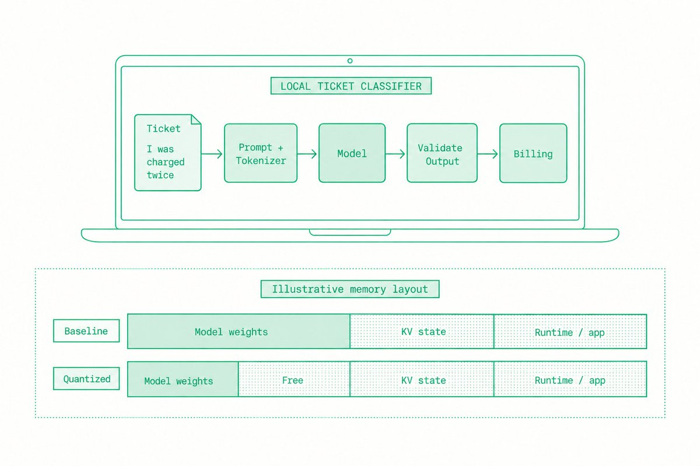
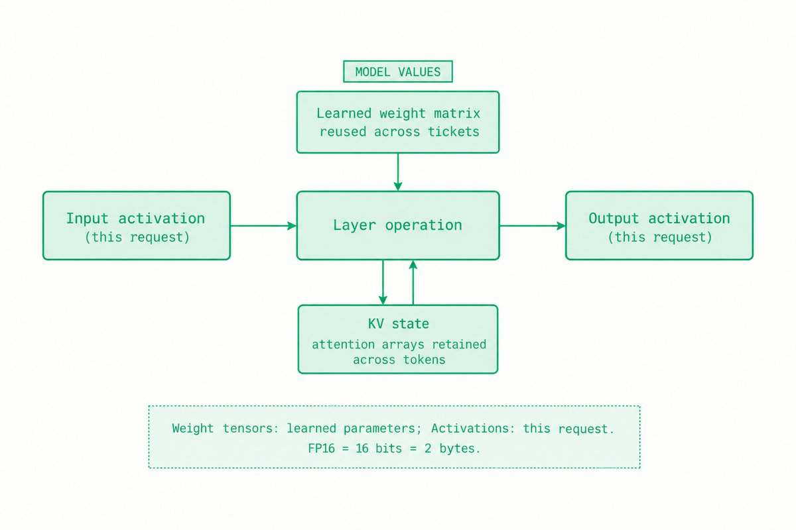
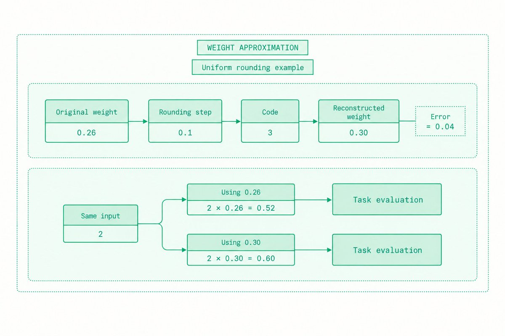
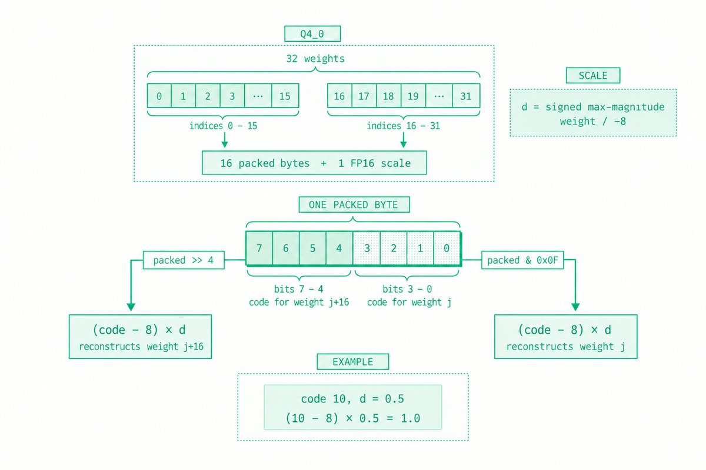
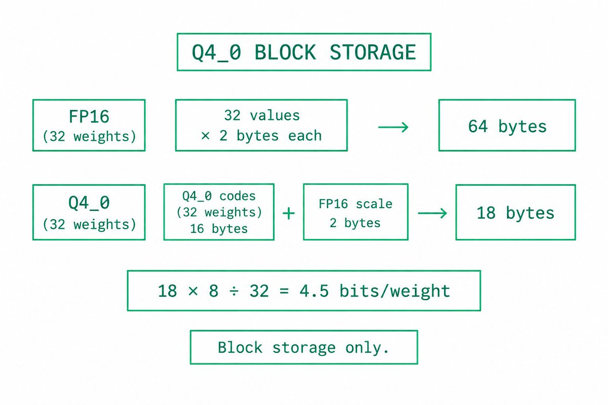
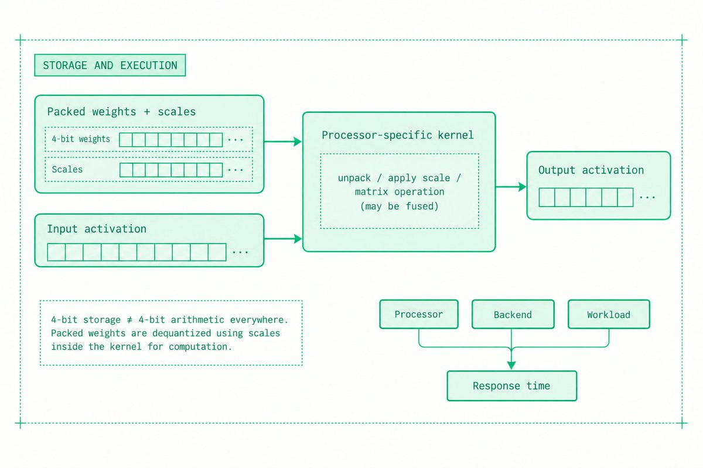
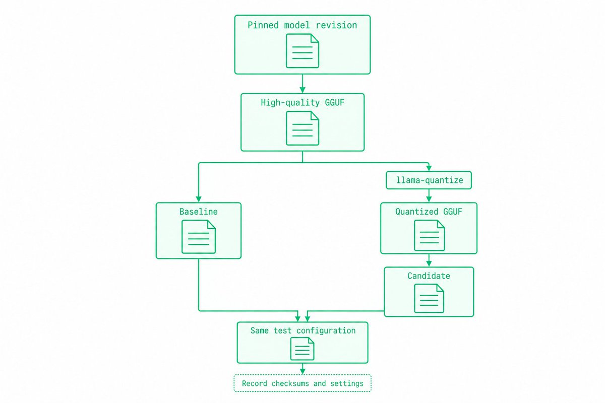
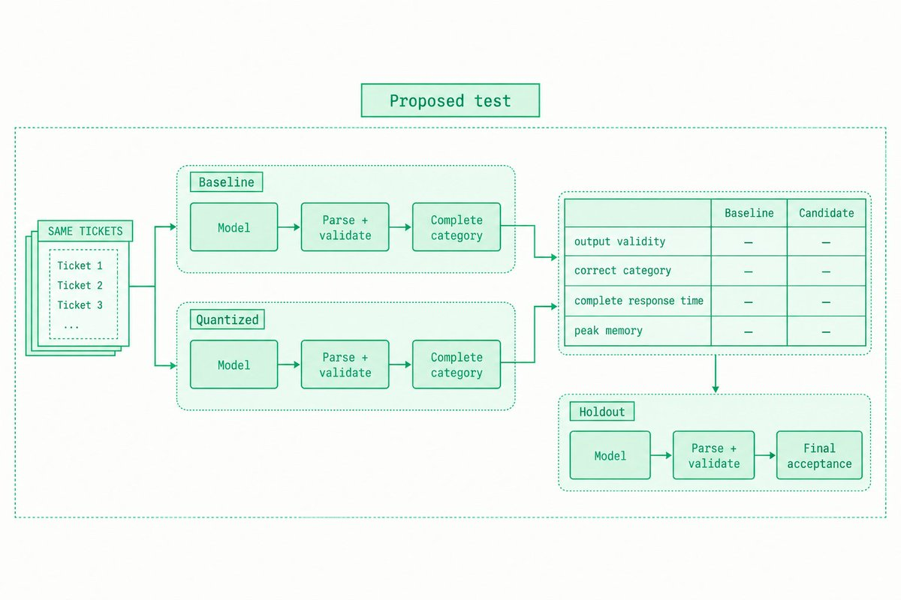
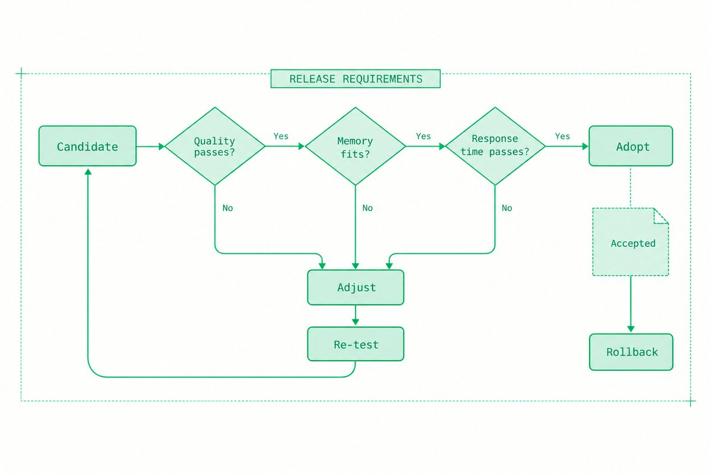

模型的内存占用直接决定了一个AI应用能支持哪些客户设备。量化用更少的位来存储选定的模型数值，既减少存储，也可能提升执行速度。
这篇从llama.cpp的Q4_0格式讲起，把近似过程、存储开销和验收测试串成一条完整链路：先看清近似带来的误差，再算出真实的存储代价，最后用一套可对比的实验判断这个模型到底能不能交付。
一个桌面客服应用在本地对工单做分类。“我被重复扣款了”这样的工单应该归到“账单”类别。其他类别还包括账号访问、缺陷和待复核。应用在把工单路由给客服之前，会先解析模型的输出。
团队选定了一个满足分类要求的模型。接下来必须让这个模型在受支持的笔记本上跑起来，既不耗尽内存，也不拖慢客服的工作。工程师要对设备限额、分类错误、完整响应时间和更新路径负责。
当模型权重占用的内存过多时，量化是可选方案之一。只有量化后的应用仍然满足上述要求，它才有意义。下载体积变小，本身并不等于部署可用。

分词器把工单文本切成token：词、词片段或标点。运行时负责加载模型并执行它的各种运算。llama.cpp是一个开源推理运行时，同时有CPU和GPU执行路径。CPU是通用处理器，GPU是为大量并行数值运算设计的处理器。
模型各层对数值数组做变换。张量就是带有确定形状的数组，比如向量或矩阵。权重张量保存训练学到的参数，激活张量保存当前这条工单的中间结果。同一套权重可以处理很多工单，而每条工单的激活值各不相同。
数据类型决定一个被存储的数字如何表示。FP16是16位浮点格式。一个字节包含8位，所以每个FP16数值占2字节。参数动辄几十亿，哪怕每个权重只差几个位，影响也不小。
这里聚焦的是训练后的权重量化：在训练完成之后，把选定的已学习数值做转换。激活值和键值缓存也可以量化，但那是彼此独立的配置选择。KV缓存保存已处理token的注意力数据，并且会随输入长度和活跃请求数增长。

量化后的表示可用的取值更少。很多格式会存一个很小的编码，再加上缩放信息。反量化利用这些信息重建出一个近似数值，再交给计算使用。
举个简单的取整例子：步长取0.1。权重0.26映射到编码3，重建结果是3 × 0.1 = 0.3。绝对误差是0.04。这里说明的是均匀取整，不是Q4_0的转换算法。
这种近似会改变某一层的计算结果。若输入值是2，用原始权重时它贡献2 × 0.26 = 0.52；用近似值则是2 × 0.3 = 0.6。后续运算用的就是这个被改变的结果。但这并不预示某条工单会不会被分错类别，那需要针对任务本身做评测。
有些错误比另一些更要紧。平均准确率的微小变化，可能掩盖退款纠纷或含义模糊的账号请求上反复出现的失败。要比的是各个类别和判定不一致的样本，而不只是一个总评分。

Q4_0是一个具体格式，方便看清打包后的权重和逐块缩放因子。它在这里是教学示例，并不意味着它是这个客服应用的最佳格式。
quantize_row_q4_0_ref() 函数以32个值为一块来处理每一行。对每个块，它找出绝对值最大的带符号值，并计算缩放因子d = max / −8。这里的max是保存该带符号权重的源变量，未必是最大的正值。缩放因子以FP16存储，数值被转成4位编码，两个编码打包进一个字节。
4位编码有16种可能的组合。在dequantize_row_q4_0() 函数里，每个字节的低半字节和高半字节各自成为一个编码。减去8之后，编码被重新居中到 −8到7的范围。再乘以存下来的缩放因子，就重建出它的近似值。缩放因子可以是带符号的，这一点比前面那个取整例子更具体。
例如，存下来的缩放因子是0.5、编码是10，重建结果为 (10 − 8) × 0.5 = 1.0。在C代码里，packed & 0x0F取出低4位编码，packed >> 4取出高4位编码，每个打包字节提供两个值。打包的位置来自源块的前后两半，未必是相邻的权重。

block_q4_0的定义包含32个4位编码和一个2字节的缩放因子。编码占16字节，整个块占18字节。平均下来是18 × 8 ÷ 32 = 4.5位/权重。
同样这32个值用FP16存要占64字节，块级存储比是64 ÷ 18 ≈ 3.56。缩放因子这类元数据，正是“4位”并不等于每个权重总共只占4位的原因。

这个比值不含其他张量、文件元数据、运行时缓冲、激活值和KV状态。它既不是实测的整模型内存降幅，也不是实测的加速比。能够成功加载的模型，在长工单分配额外状态时依然可能失败。
内核是在特定处理器上执行数值运算的底层例程。紧凑的权重格式减少了需要存储或搬运的字节，但拆包编码、套用缩放因子本身也要花工夫。选用的内核可能先重建数值，也可能把转换融合进运算里。
4位权重存储并不意味着每个模型运算都要用4位算术。速度取决于处理器、后端、内核和工作负载。比较不同格式时，要保持CPU/GPU的分配方式不变；如果改变了分配方式，就把它当作另一次部署对比单独报告。
GGUF是llama.cpp使用的模型文件格式。一个文件里可以存放数值类型各不相同的张量。.gguf后缀并不能告诉你每一层的精度。把部分张量保持更高精度可以保住质量，代价是更多内存。

从同一个源模型版本出发。llama.cpp的量化指南讲了先转成GGUF，再用llama-quantize做量化，也记录了逐张量格式和可选的重要性数据，后者用来引导转换。
用一个高质量源产物，而不是对已经量化过的文件反复再量化。记录转换器版本、命令、目标格式，以及任何校准数据，也就是用来引导近似过程的代表性输入。下载文件名相似，并不能说明它们的唯一差别就是精度。
为基线文件和候选文件保存校验和。校验和可以确定它们的确切内容。把它们与分词器、提示模板、上下文上限、输出设置、后端和硬件一并记录。

在转换之前，先定义受支持设备的内存预算、最长完整响应时间和质量下限。样本里要包含含义模糊的工单和关键类别。另留一套质量集用于最终验收。
1 用同一模型版本，跑一遍达到质量要求的基线和一个量化候选。其他无关设置保持不变。
2 加载时间单独测。在测量稳定运行之前，用同样的流程把两种配置都预热。
3 用同一批工单逐条跑。记录输出是否有效、分类是否正确、完整响应时间和峰值内存。
4 重复运行并保留原始观测数据。检查两种配置输出不一致的工单，以及每个类别内部的错误。
5 用受支持的最长输入和预期的并发数做测试，并发数就是同时处于活跃状态的请求数量。在每一类受支持设备上重复。
对这个应用来说，响应时间在解析和校验完成之后才算结束。一个残缺的标签无法把工单路由出去。记录输入和输出长度，免得输出更短或更不完整被误当成效率提升。
在平台提供相应数据的前提下，把模型文件大小、进程内存和设备内存分开统计。在共享内存的系统上，不要叠加那些描述相互重叠分配的计数。设备预算里要算上操作系统和应用的余量。

如果基线在目标设备上根本放不下，就把这个结果记为不可行。可以在合适的硬件上确定它的质量水平，但不要把来自不同设备的耗时当作单独的量化加速比来展示。要在相同条件下比较目标设备上可行的候选方案。

只有当候选方案满足应用对质量、内存和响应时间的要求时，才采用它。如果重要类别不达标，就试一个更温和的格式，或者把敏感张量保持更高精度。每次改动之后都要重新跑一遍验收。
如果内存降下来了但响应时间变长，就去检查后端和转换开销。这个取舍也许依然满足设备容量要求，但必须把它讲明白。如果压力主要来自KV状态或大量活跃请求，权重量化未必能解决。
保留被接受的产物和配置，以便回滚。测试安装与更新路径。模型、运行时、提示或受支持硬件发生变化之后，重新做评测。
主要概念：Philip Kiely《Inference Engineering》印刷版第120至128页。Q4_0的存储与转换来自锁定版本的llama.cpp源码，链接附在相应示例旁边。算术与工单示例均为示意。分类与性能测试属于建议做法，这篇文章没有跑推理基准测试。
推理工程入门指南: https://x.com/danialhasan/article/2099217156483494205
quantize_row_q4_0_ref源码: https://github.com/ggml-org/llama.cpp/blob/391fac16460f15233a7740550d858ac96df3419d/ggml/src/ggml-quants.c#L113-L147
dequantize_row_q4_0源码: https://github.com/ggml-org/llama.cpp/blob/391fac16460f15233a7740550d858ac96df3419d/ggml/src/ggml-quants.c#L459-L477
block_q4_0定义: https://github.com/ggml-org/llama.cpp/blob/391fac16460f15233a7740550d858ac96df3419d/ggml/src/ggml-common.h#L194-L199
llama.cpp量化指南: https://github.com/ggml-org/llama.cpp/blob/391fac16460f15233a7740550d858ac96df3419d/tools/quantize/README.md
Philip Kiely, Inference Engineering: https://www.baseten.co/inference-engineering/
参考：https://x.com/danialhasan/status/2100651133869941032